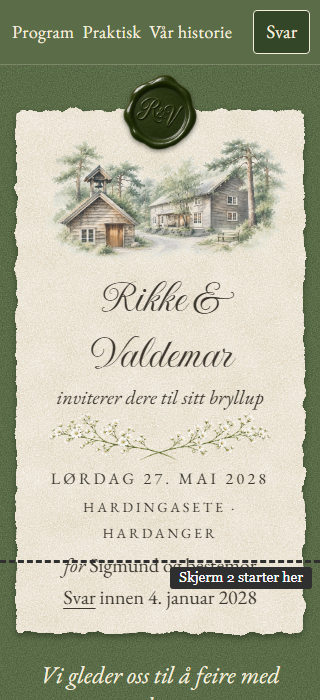
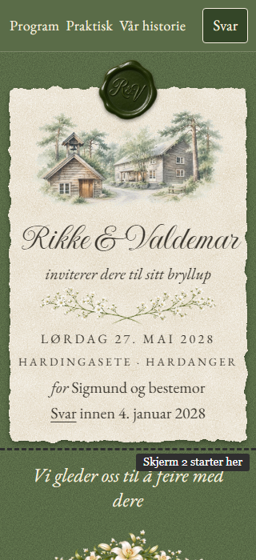

Slik ser toppen av invitasjonen ut på de minste mobilene (320 px brede). Den stiplede streken viser omtrent hvor den første skjermen slutter.


A: navnene og «Hardingasete · Hardanger» går over to linjer, så svarfristlinja havner under den første skjermen (611 px). «Svar» i menyen er fortsatt synlig.
B: på skjermer under 340 px blir margen på sidene 12 px (i stedet for 16) og luften inne i arket 10 px (i stedet for 20). Da står navnene og stedet på én linje, og hele invitasjonen får plass på første skjerm (530 px). På vanlige mobiler (360 px og mer) er alt som før.